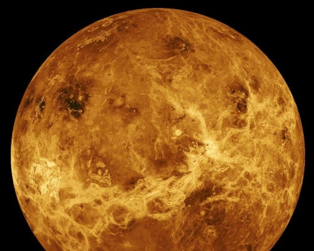

Vénus (0,7 UA) est proche de la Terre en taille et en masse (0,815 masse terrestre) et, comme elle, possède un épais manteau de silicate entourant un noyau métallique, une atmosphère significative et une activité géologique interne. Cependant, elle est beaucoup plus sèche et la pression de son atmosphère (au sol) est 90 fois celle de la nôtre. Vénus ne possède aucun satellite. Il s’agit de la planète la plus chaude, avec une température de surface supérieure à 450°C, maintenue essentiellement par l’effet de serre causé par son atmosphère très riche en gaz carbonique. Aucune activité géologique récente n’a été détectée sur Vénus ; son absence de champ magnétique ne permettant pas d’empêcher l'appauvrissement de son atmosphère, cela suggère cependant qu’elle est réalimentée régulièrement par des éruptions volcaniques. Sa période de révolution est d'environ 225 jours.